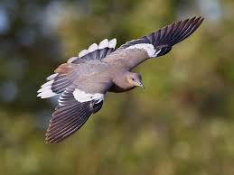

About
" Birdwatching, or birding, is a form of wildlife observation in which the observation of birds is a recreational activity or citizen science. It can be done with the naked eye, through a visual enhancement device like binoculars and telescopes, by listening for bird sounds "
During this Worldwide Pandemic Situation, Birding is somewhat postponed to what seems almost an eternity now...
Well Worry No More!!!
"Birdify" is here...
So What Can "Birdify" do for you :
- Will be able to see the Common Names as well as the Scientific Names of the Aritsts( all puns intented ;-) ), along with their Picture
- There is a Know More button which takes you to the Wikipedia of the individual Birds.
- You can listen to the Calls of the Birds.
- You Can Also Download the bird calls in mp3 format, but before doing so, I would suggest you Read the Disclaimer
"Birdify" is here...
- Will be able to see the Common Names as well as the Scientific Names of the Aritsts( all puns intented ;-) ), along with their Picture
- There is a Know More button which takes you to the Wikipedia of the individual Birds.
- You can listen to the Calls of the Birds.
- You Can Also Download the bird calls in mp3 format, but before doing so, I would suggest you Read the Disclaimer
Melodies
-
House Sparrow
Scientific Name: Passer domesticus
-
Blue MockingBird
Scientific Name: Melanotis caerulescens
-
Brown Creeper
Scientific Name: Certhia americana
-
Buff Collared Nightjar
Scientific Name: Antrostomus ridgwayi
-
Burrowing Owl
Scientific Name: Athene cunicularia
-
BushTit
Scientific Name: Certhia americana
-
Chestnut Collared Longspur
Scientific Name: Calcarius ornatus
-
Common Nighthawk

Scientific Name: Chordeiles minor
-
Common Raven
Scientific Name: Corvus corax
-
Elf Owl
Scientific Name: Micrathene whitneyi
-
Euporean Starlings
Scientific Name: Sturnus vulgaris
-
Golden Crowned Kinglet
Scientific Name: Regulus satrapa
-
Great Tailed Gackle
Scientific Name: Quiscalus mexicanus
-
Green Kingfisher
Scientific Name: Chloroceryle americana
-
Green Tailed Towhee
Scientific Name: Pipilo chlorurus
-
Horned Lark
Scientific Name: Eremophila alpestris
-
Lawrence Goldfinch
Scientific Name: Spinus lawrencei
-
Loggerhead Shrike
Scientific Name: Lanius ludovicianus
-
Pacific Wren
Scientific Name: Troglodytes pacificus
-
Macaw Parrot

Scientific Name: Psittacidae
-
Red Crossbills
Scientific Name: Loxia curvirostra
-
Red Headed Woodpecker
Scientific Name: Melanerpes erythrocephalus
-
Rock Pigeon

Scientific Name: Columba livia
-
Rose Throated Becard
Scientific Name: Pachyramphus aglaiae
-
Ruby Throated Hummingbird
Scientific Name: Archilochus colubris
-
Scott's Oriole
Scientific Name: Icterus parisorum
-
Western Screech Owl
Scientific Name: Megascops kennicottii
-
Whistling Duck
Scientific Name: Anas arcuata
-
White Throated Swift
Scientific Name: Aeronautes saxatalis
-
White Winged Dove
Scientific Name: Zenaida asiatica
-
Yellow Billed Cuckoo
Scientific Name: Coccyzus americanus
-
Yellowhead Blackbird
Scientific Name: Xanthocephalus xanthocephalus
Disclaimer
All the Bird Sounds used, are taken from "AZFO Mp3 Bird Sounds Library".
All recordings are copyrighted© by the recordist. Downloading and copying are authorized for noncommercial educational or personal use only. AZFO discourages the use of playback in the field to attract nesting species into view, particularly rare, sparse or local nesters in the state.
Contact / Suggestions
Have any suggestions for this website or any doubts while creating something similar, if you are facinf any doubts, feel free to reach out to me...